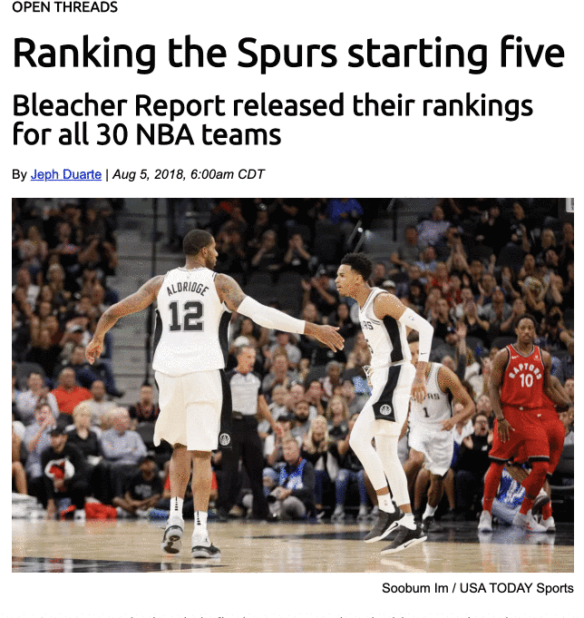

9 CSS mastery
For this mastery assignment, you will be picking up from the last HTML mastery assignment in your yourname-html-css-mastery folder and enhancing it with your own CSS based on the directions provided below.
We did many of these things with our practice assignment. You’ll also have to figure out some new things on your own, as that is part of coding.
10 Goal
You’ll make a news story, something like this:

10.1 Requirements
Tip
You will likely find it useful to refer to the CSS practice chapter as you work through this.
- Make sure you update your
story.htmlfile with any of the feedback you received in grading. - Create a reset.css file. You can use the same one we used with the practice assignment, and you need to populate it with the contents of the HTMLDocter reset file.
- Now that you have a reset css file, you’ll need to create another separate css file for all your other styles (name it styles.css) and link it to your html file.
- Set the base (html) font as “Times New Roman” with acceptable backups. Reset the font-size for easier relative sizing by setting the body font size to 62.5%, which is the equivalent of 10px, like we did with the recipe.
- Now set a standard font size for text elements like
<p>,<ul>,<ol>and<dl>tags. (Make the base font larger.) You’ll also want to set a bottom margin on those elements so they don’t run up against each other. - Add an
<article>tag after the<body>tag in your HTML file if you need to, then in your CSS file make the max-width of the article 620px and center it. - In the HTML, set the width of the photo to 620px using a “width” attribute (you can put it after the src attribute).
- Use Google Fonts to find and use a font called “Ubuntu” and add that to your page. You can review the chapter Using Google Fonts for tips on how.
- Set all your headlines to use that Ubuntu font (with backups) and set headline sizes that make visual sense, but follow convention. (i.e., make sure h1 is the biggest and is used for the article headline.) Make sure you also include the
<h4>label above the headline. - Set the byline and photo credit lines to use the font Arial with an appropriate backup. Adjust sizes so they are visually appealing.
- Use a
<span>tag around the date in the byline, and set it to font-style of italic. This page explains a span, but PLEASE don’t style the span directly like that. Write in the styles file instead. - Make the photo credit text right-aligned and nudge up the margin so it sits close but not upon the photo so readers know that is what it goes with.
- For the blockquote, set a solid left border that is grey and 4px thick. Add some padding (20px) between this border and the text, and some left margin (30px) to inset into the article.
- For the ordered list style, the numbers should line up with the text in the article.
list-style-positionshould help you with this. - For the “comment-notes” section, set a background-color of #CCC and give the content padding of 12px on all sides.
- Once you are done with everything, push it to Github.
- Turn in the link to your repo.